FRUEN 스틱형 과일청
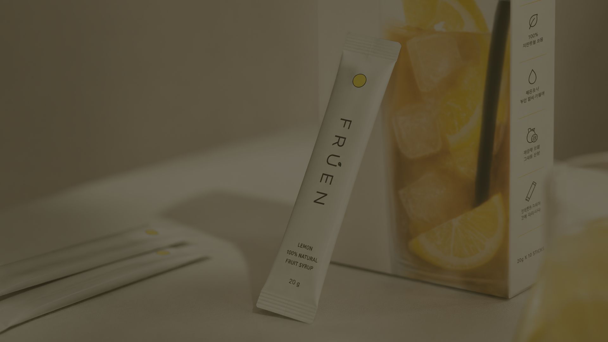
ONE FRUIT
ONE STICK
ONE FRUIT
ONE STICK
ONE FRUIT
ONE STICK
ONE FRUIT
ONE STICK
BORN
FORM A
PROBLEM
냉장고 속에만 있던 과일청의 불편함을 줄였습니다.
남기기 쉽고 휴대하기 어려웠던 병 과일청 대신,
언제 어디서나 즐기는 한 포의 프루엔을 만들었습니다.
무거웠던 일상의 한 잔에 가벼움을 더하다,
프루엔의 시작
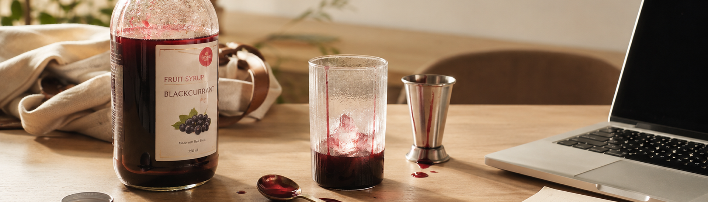
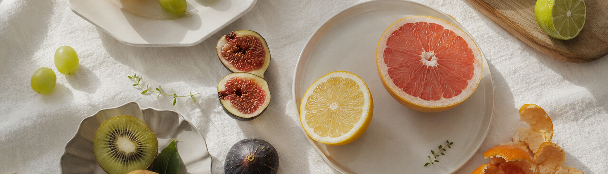
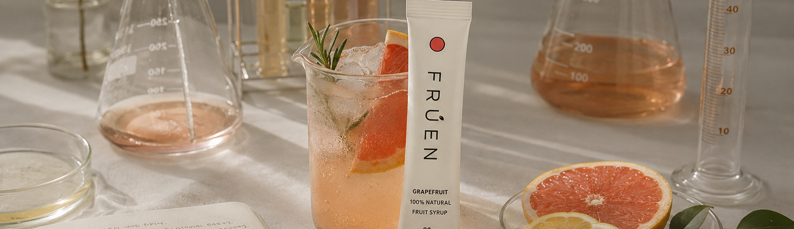
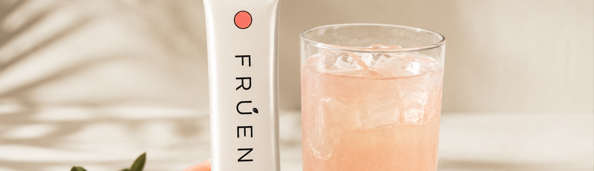
일상의 불편함에서
시작된 새로운 고찰
일상 속 작은 불편을
새로운 가능성으로 바라봅니다.
자연이 품은 과일의
가능성을 재정의
자연 그대로의 맛을 일상 속에서
쉽게 즐길 수 있도록 연구합니다.
가장 가벼운 한 포,
가장 완벽한 기술로 완성
한 포의 간편함 속에
더 높은 완성도를 담아냅니다.
국내 과일청이 마주할
단 하나의 새로운 기준, FRUEN
과일청의 새로운 기준을 만들어갑니다.
숫자로 증명하는
FRUEN
재구매율
리뷰 만족도
누적 판매량
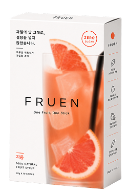
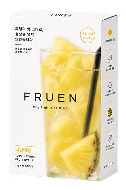
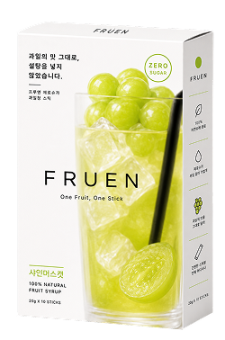
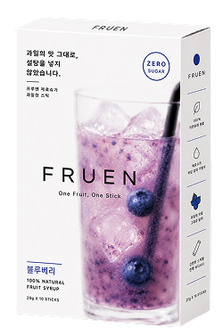
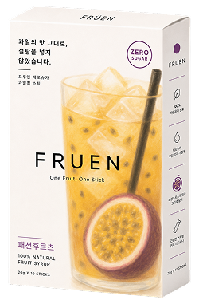
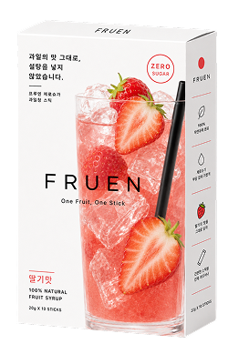
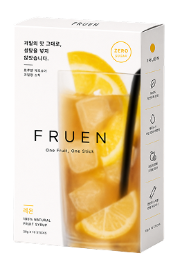
FLAVOR
한 잔의 음료부터 디저트까지,
어디에나 잘 어울리는 다양한 맛
SWEET
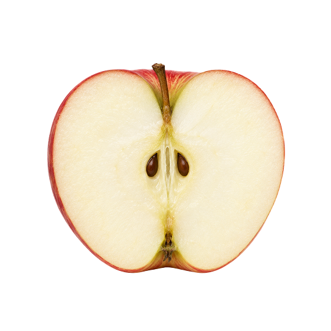
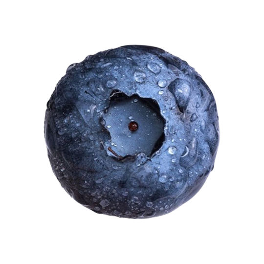
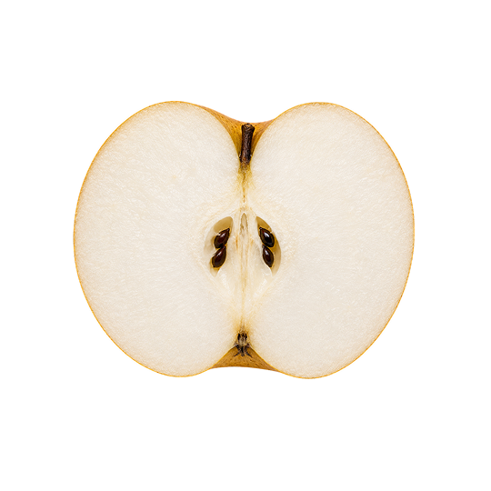
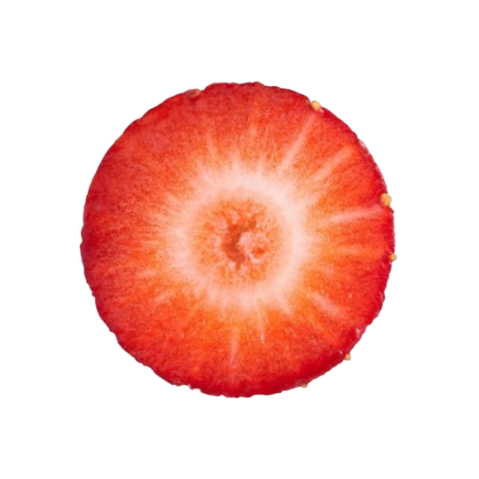
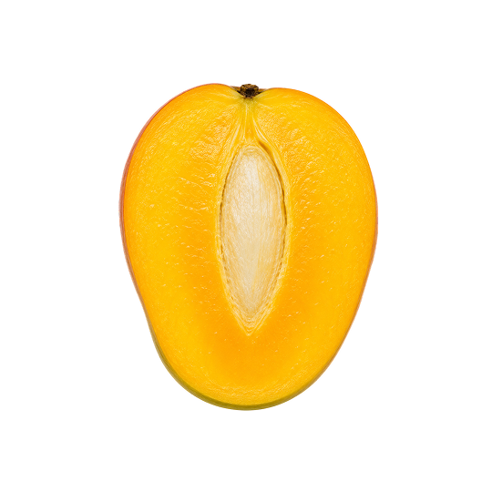
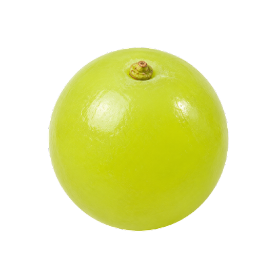
SOUR
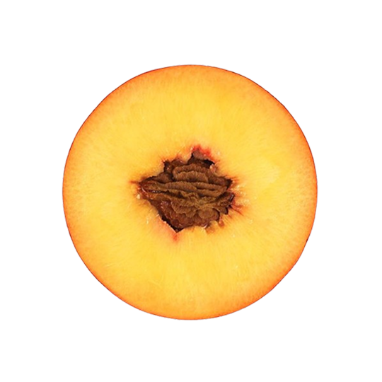
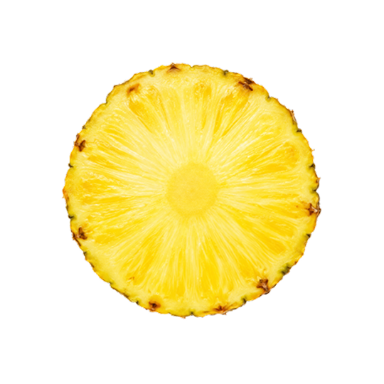
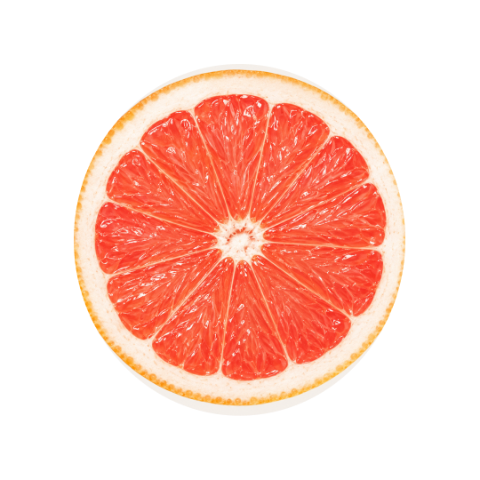
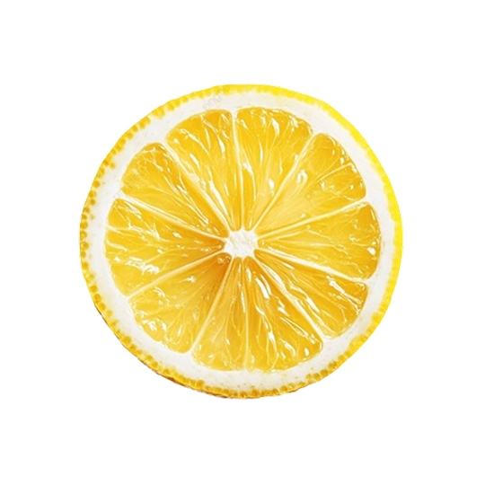
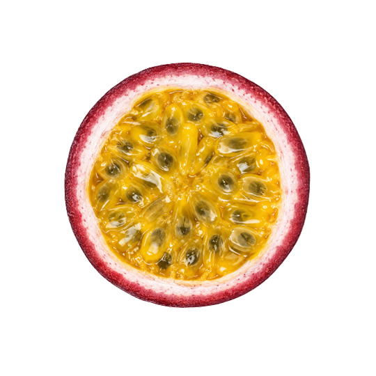
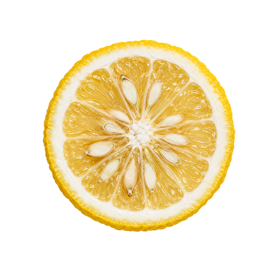


FRUEN ADE
시원한 탄산수 위로 프루엔 한 포를 더해보세요.
톡톡 터지는 청량감과 선명하게 피어나는
과일 본연의 향이 어우러져, 전문 바의 에이드처럼
가볍고 산뜻한 한 잔이 완성됩니다.
FRUEN TEA
따뜻한 물이나 차 위로 프루엔 한 포를 더해보세요.
은은하게 퍼지는 과일의 향과 부드럽게 스며드는
자연의 달콤함이 어우러져, 카페에서 즐기던 티처럼
편안하고 깊은 한 잔이 완성됩니다.
FRUEN DESSERT
아이스크림이나 팬케이크 위에 프루엔 한 포를 더해보세요.
신선한 과일의 풍미와 부드럽게 녹아드는
달콤함이 어우러져, 카페 디저트처럼
가볍고 특별한 한 접시가 완성됩니다.
FRUEN YOGURT
시원한 요거트 위로 프루엔 단 한 포를 더해보세요.
부드럽게 어우러지는 달콤함과 풍성하게 살아나는
과일 본연의 풍미가 어우러져, 카페에서 즐기는 듯한
조화를 이루어 진하고 산뜻한 요거트 한 컵이 완성됩니다.
FRUEN SMOOTHIE
시원한 스무디 위로 프루엔 단 한 포를 더해보세요.
깊고 진한 과일의 풍미와 부드럽게 퍼지는
부드럽게 퍼지는 자연스러운 달콤함이
어우러져, 전문 카페 스무디처럼 신선하고 든든한
한 잔이 완성됩니다.